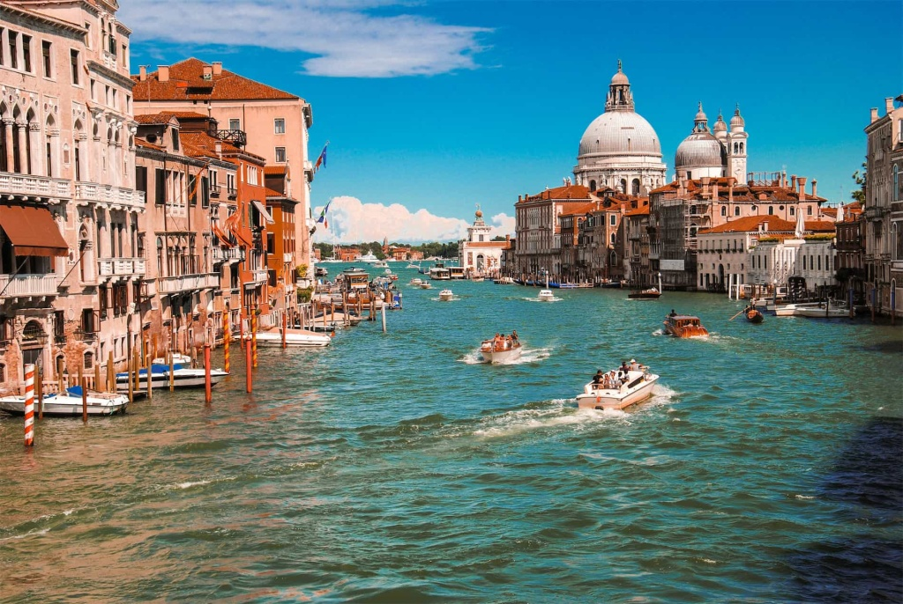
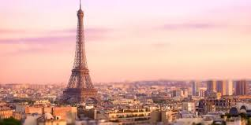
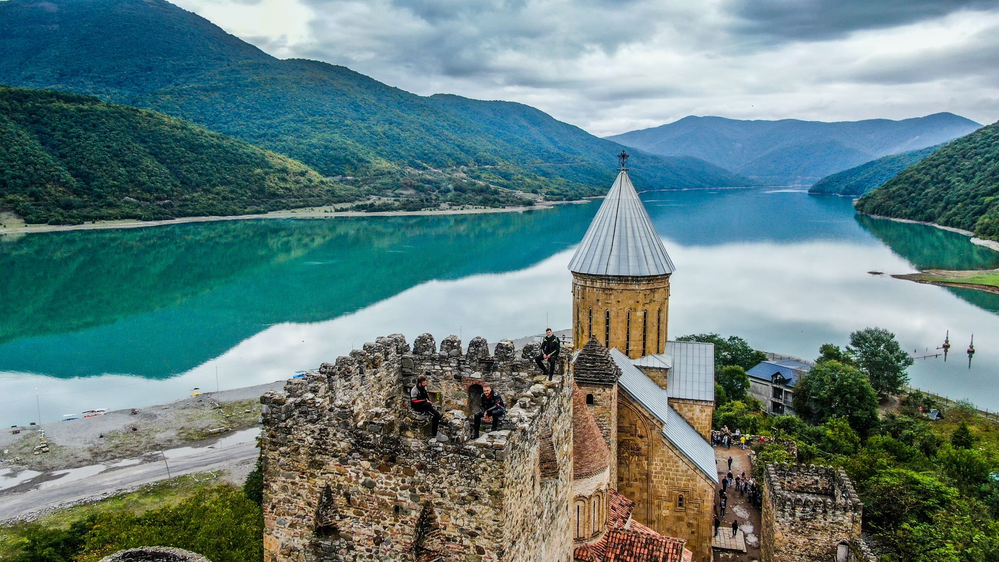
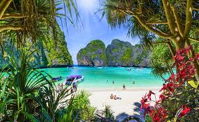
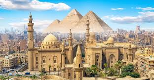
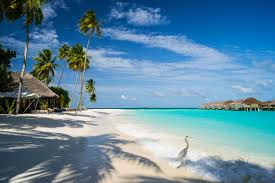

Доступные места для туризма
Италия

Италия — страна искусства и вдохновения Италия — популярное туристическое направление, известное своей богатой историей, культурой и кухней. Здесь находятся знаменитые города, такие как Рим, Венеция и Флоренция, где можно увидеть уникальные памятники, включая Колизей. Туристов привлекают живописные пейзажи, тёплый климат и знаменитая кухня: пицца, паста и итальянские вина. Отдых здесь подойдёт как любителям истории, так и тем, кто ищет море и красивые виды. Италия — идеальное место для яркого и запоминающегося путешествия.
Франция

Франция — страна романтики и утончённой культуры Франция — одно из самых посещаемых туристических направлений в мире, известное своей архитектурой, искусством и кухней. Столица страны, Париж, привлекает миллионы туристов такими символами, как Эйфелева башня и Лувр. Страна славится живописными регионами, уютными городами и разнообразными курортами — от Лазурного берега до Альп. Французская кухня, вина и атмосфера делают отдых здесь по-настоящему особенным. Франция — идеальный выбор для романтического и культурного путешествия.
Вьетнам
Вьетнам — яркий отдых и экзотика Вьетнам привлекает туристов своей природой, тёплым климатом и богатой культурой. Здесь стоит увидеть Бухта Халонг, а также посетить города Ханой и Хошимин. Пляжи, джунгли и вкусная местная кухня делают отдых во Вьетнаме незабываемым.
Грузия

Грузия — страна гор и древних традиций Грузия привлекает туристов своими величественными Кавказскими горами, древней культурой и гостеприимством. Здесь стоит посетить столицу Тбилиси с её уникальной архитектурой и историческими памятниками. Страна славится своими винодельнями, вкусной кухней и живописными ландшафтами. Горные монастыри, озёра и ущелья создают идеальные условия для трекинга и активного отдыха. Грузия — идеальное место для путешествия в поисках природы, истории и подлинного кавказского гостеприимства.
Таиланд

Таиланд — страна улыбок и экзотики Таиланд привлекает туристов своими храмами, пляжами и vibrant культурой. Столица Бангкок известна своими дворцами и ночной жизнью. Страна славится островами, такими как Пхукет и Краби, с кристальными водами и белыми пляжами. Традиционная кухня и гостеприимство местных жителей делают отдых незабываемым. Таиланд — идеальное место для пляжного отдыха и культурных впечатлений.
Египет

Египет — страна древних чудес и солнечных пляжей Египет — популярное туристическое направление, известное своими древними памятниками, такими как пирамиды и Сфинкс. Столица страны, Каир, привлекает туристов своей историей и культурой. Египет славится своими курортами на Красном море, где можно насладиться пляжами и дайвингом. Тёплый климат и богатая история делают отдых здесь незабываемым. Египет — идеальное место для любителей истории и пляжного отдыха.
Мальдивы

Мальдивы — страна тропических островов. Мальдивы — это архипелаг из 26 атоллов в Индийском океане, известный своими белоснежными пляжами, кристально чистой водой и роскошными курортами. Это идеальное место для романтического отдыха, дайвинга и сноркелинга. Тёплый климат, разнообразная морская жизнь и атмосфера отдыха делают Мальдивы идеальным выбором для тех, кто ищет экзотический и расслабляющий отдых. Мальдивы — рай для пляжного туризма и водных развлечений.